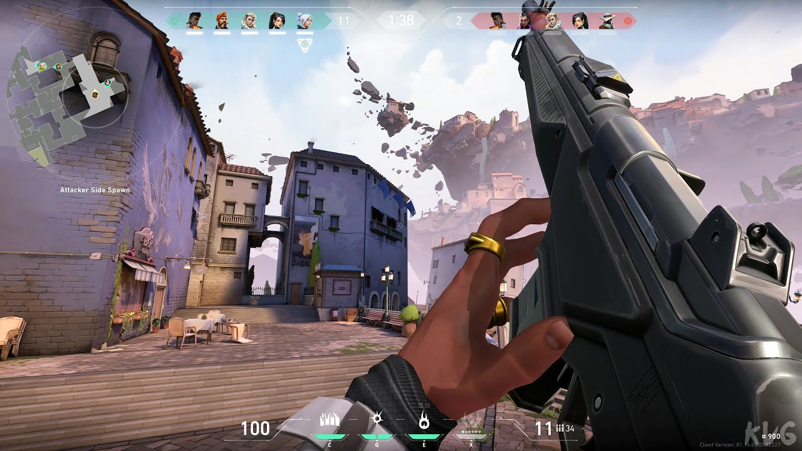

Valorant
Valorant adalah game FPS taktis yang dikembangkan oleh Riot Games dan dirilis pada tahun 2020. Game ini menggabungkan elemen shooter tradisional dengan kemampuan unik dari setiap karakter (agent). Setiap tim terdiri dari lima pemain, dan gameplay-nya sangat menekankan kerjasama tim, strategi, serta akurasi tembakan. Setiap agent memiliki kemampuan khusus yang bisa digunakan untuk mengontrol area, menyerang, atau melindungi tim. Popularitas Valorant terus meningkat karena update berkala, peta baru, dan agen yang selalu menambah dinamika permainan.
Counter-Strike: Global Offensive (CS)

CS dirilis oleh Valve Corporation dan Hidden Path Entertainment pada 2012, adalah salah satu game FPS paling legendaris dan berpengaruh di dunia. Game ini merupakan penerus dari seri Counter-Strike yang dimulai sejak tahun 2000-an. CS dikenal karena gameplay-nya yang sederhana tetapi menuntut tingkat keterampilan yang tinggi. Dalam game ini, pemain terbagi menjadi dua tim: Terrorists dan Counter-Terrorists, yang bertanding dalam mode seperti bom penanaman/pelucutan (Bomb Defusal) atau penyelamatan sandera (Hostage Rescue). Keberhasilan pemain dalam CS sangat bergantung pada kecepatan refleks, penguasaan senjata, dan taktik tim yang solid.
Overwatch 2
Overwatch 2, dikembangkan oleh Blizzard Entertainment, adalah sekuel dari Overwatch yang dirilis pada 2016. Game ini melanjutkan formula pendahulunya dengan menggabungkan elemen FPS dengan mekanik MOBA. Setiap pemain memilih hero dengan kemampuan unik dan peran spesifik (tanker, damage, atau support) dalam tim. Overwatch 2 memperkenalkan mode permainan baru, perbaikan grafis, dan peta tambahan yang membawa pengalaman bermain lebih imersif. Elemen teamwork yang intens dan koordinasi antar hero membuat game ini unik dan menarik, menekankan sinergi strategi daripada sekadar adu tembak cepat. Ketiga game tersebut memiliki gaya dan mekanisme yang berbeda, membuatnya menarik bagi pemain dengan preferensi bermain yang bervariasi, mulai dari aksi cepat dan taktik tim dalam CS hingga kemampuan heroik dan strategi sinergis dalam Valorant dan Overwatch 2.